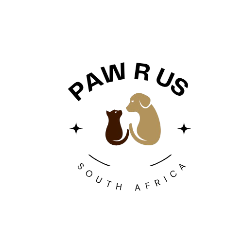

<!DOCTYPE html>
<html>
    <head>
        <title>
            About Paw R Us SA

        </title>
    </head>

    <body>

        
    </body>

</html><!DOCTYPE html>
<html>
    <head>
        <title>
            Home Page
        </title>
    </head>
    
        <header> 
            
            <a href="index.html">Home Page</a>
            <a href="get_involved.html">Get involved</a>
            <a href="gallery.html">Gallery</a>
            <a href="contact.html">Contact us</a>
            
        </header>
    <body>
        <h1>
            Paw R Us SA
        </h1>
        <h2>
            Who is Paw R Us SA? 
        </h2>
       
         
    
        <p>We Paw R Us SA are an animal welfare organisation dedicated to helping animals in need by promoting responsible pet ownership, compassion and animal welfare. We do this through our  social-media presence and community involvement. </p>
        <br>

        <h2> Our Mission </h2>
        The following is what the organisation aims to accomplish while it remains active in the community. 
        <ol>
        <li>Our mission is to promote the welfare, protection, and safety of animals by providing homeless animals shelter, support, and the opportunity to get adopted. </li>
        <br>
        <li>We aim to connects animals with caring individuals while encouraging adoptions, volunteering and donations to help provide our animals with better lives and opportunities to find safe, loving homes.</li> 
        </ol>
        <br>

        <h2>Our Vision </h2>
        The following is the vision of the organisation which it believes to achiev through its services and actvities.
       
        <ol>
        <li>The organisations vision is to create a safe environment where animals are treated with love and proper care that does not harm or threaten their safety. </li>
        <br>

        <li> Through this vision, the organisation wants to allow animals to live in a safe and loving environment that cares about animals.</li>
        </ol>
        <br>

        <h3> Meet the Paw R Us SA Team</h3>
        <p>This team is the backbone of the organization and the individuals who have allowed the journey of the organization to remain active and dedicated to its services in thecommnity
        <p>Every team member's work or role in the organization is as significant as any other individual's role because each member's contribution is very crucial for the growth of the organization and its success.</p>
       The team at Paw R Us SA is a team of dedicated and hardworking individuals that has meant alot to the organization, not simply because they form part of the Paw R Us SA team but because they have assisted in building the foundation of the organizaion from the begining of the project until today.Hence their efforts are widely recognised and appreciated by the organization.It is because of our team that Paw R Us SA has come closer to reacing its goal each year and has been able to accomplish all its achievements. 
       Therefore the team is indeed a significant part of the organisation and its sucess.
       <br> 
        <p>The following is a list of  the organization's team departments:

        <ul>
            <li type="circle">  Animal rescue team</li>
            <li type="circle">Donation support team </li>
            <li type="circle">Animal cruelity Awareness team</li>
            <li type="circle">Community engagement tem</li>
            <li type="circle">Event planners</li>
            <li type="circle">Volunteer recruitment team</li>
            

        </ul>
        <br>

        </p>
        The following is the list of Paw R Us SA team members that assist with the functioning of the organization:
        <br>
        
        
        <br>
        <br>
        
        
        <br>
        
        <br>
        <h3>Paw R Us SA Successful stories</h3>
        <p>Paw R Us SA was founded to assist animals find their "forever homes" hence that has always been a major goal for the organization, to help animals that were once abandoned find a new place to call home. 
        Over the past years we have successfully been able to do exactly that for our lovely furry family and we promise to continue doing so for the many more year the organization has. 
        Finding homes for our furry family has never been something easy but each time we are able to give a dog a chance at a second in life, to start afresh and the opportunity to feel loved again we feel at ease and content that all our hardwork has not gone to waste becuase <b>Finally our furry family has found a ne family to call its own.!</b> </p>
        <br>
        The following are images of our furry family that were successful in finding new homes 
        <h2>Congratulations</h2>

        
        
        
        <br>


        

        <h3> Watch the following video to learn more about Paw R Us SA </h3>
       <iframe
        width="560" height="315" src="https://www.youtube.com/embed/vSdriaY0mBI?si=CtpageapYjpPVK2s" title="YouTube video player" frameborder="0" allow="accelerometer; autoplay; clipboard-write; encrypted-media; gyroscope; picture-in-picture; web-share" referrerpolicy="strict-origin-when-cross-origin" allowfullscreen>

       </iframe>

        <h2>Our Location</h2>
        You can find Paw R Us SA in the following area or laction in South Africa:
        <ul>
       <li>
      <a href="https://maps.app.goo.gl/vM6PwuYXnWZ7UynZA"> Click to locate PawR Us SA </li>
        <br>
     <iframe src="https://www.google.com/maps/embed?pb=!1m18!1m12!1m3!1d3587.2790431858516!2d28.01372587453467!3d-25.95888727722849!2m3!1f0!2f0!3f0!3m2!1i1024!2i768!4f13.1!3m3!1m2!1s0x1e9593d1e7197d8d%3A0x7e4c0caa4fa8c4b2!2sPaws%20R%20Us%20(SA)!5e0!3m2!1sen!2sza!4v1786803456953!5m2!1sen!2sza" width="600" height="450" style="border:0;" allowfullscreen="" loading="lazy" referrerpolicy="strict-origin-when-cross-origin"></iframe>   
     </ul>
    


        
    </body>

    <footer>
         <a href="about_us.html">Back to Top</a>
        <a href="index.html">Home Page</a>
            <a href="get_involved.html">Get involved</a>
            <a href="gallery.html">Gallery</a>
            <a href="contact.html">Contact us</a>
            
    </footer>

</html>